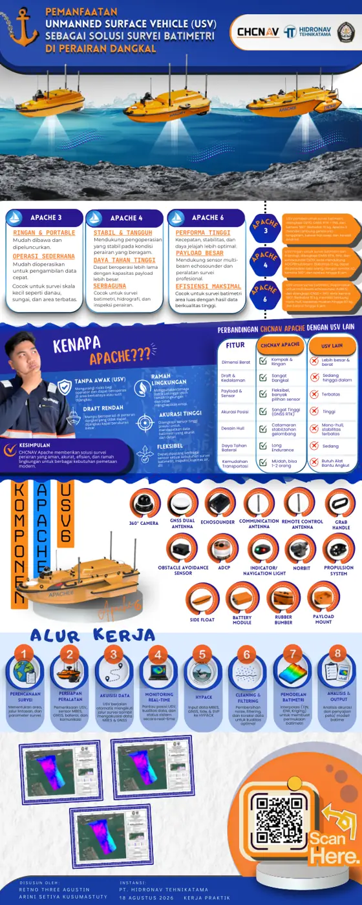

KERJA PRAKTIK • 2026
USV Surveying
Project
Bathymetric Survey • CHCNAV Apache 6
PT Hidronav × Teknik Geodesi UNDIP

FEATURED PROJECT
Survei Batimetri Perairan Dangkal
Hasil Peta Batimetri3 metode
↗
USV Surveying HubKunjungi website utama
›